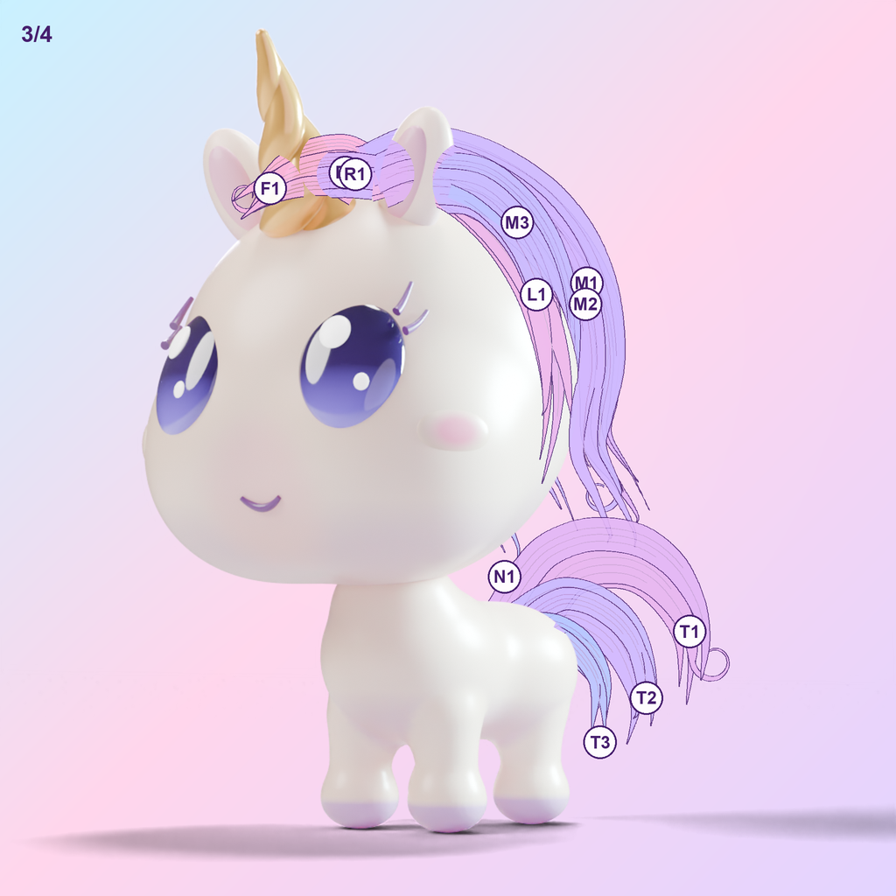
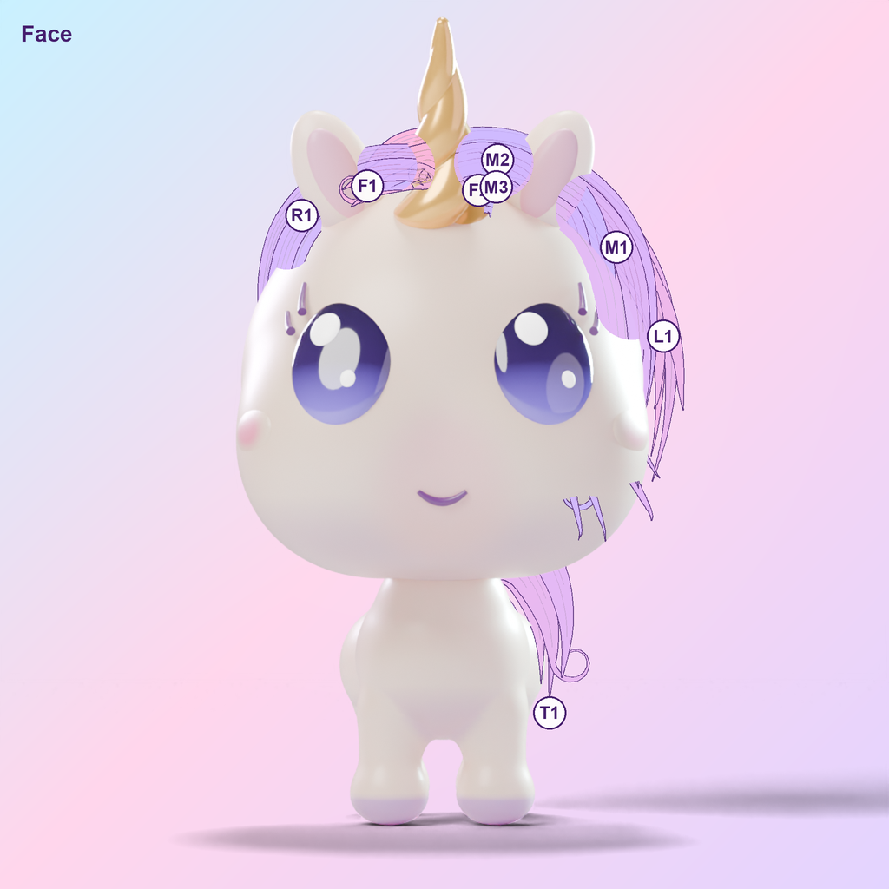
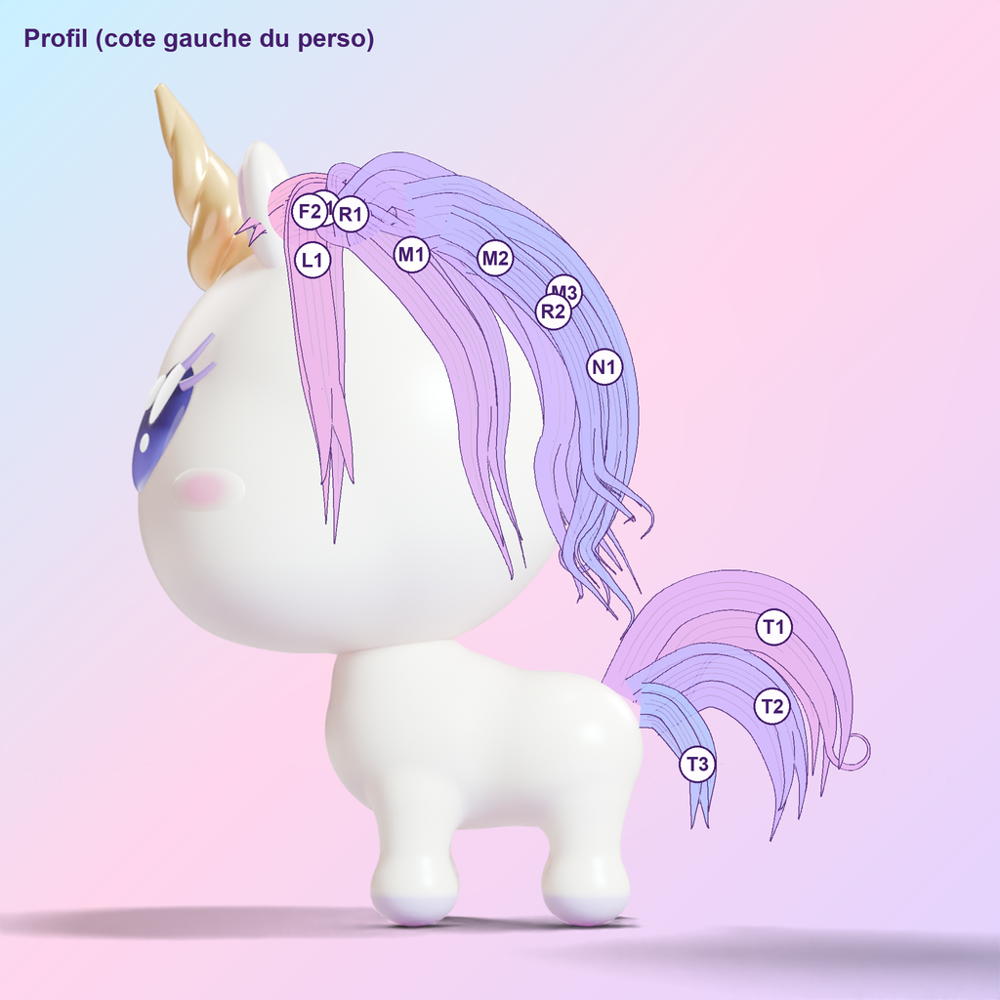
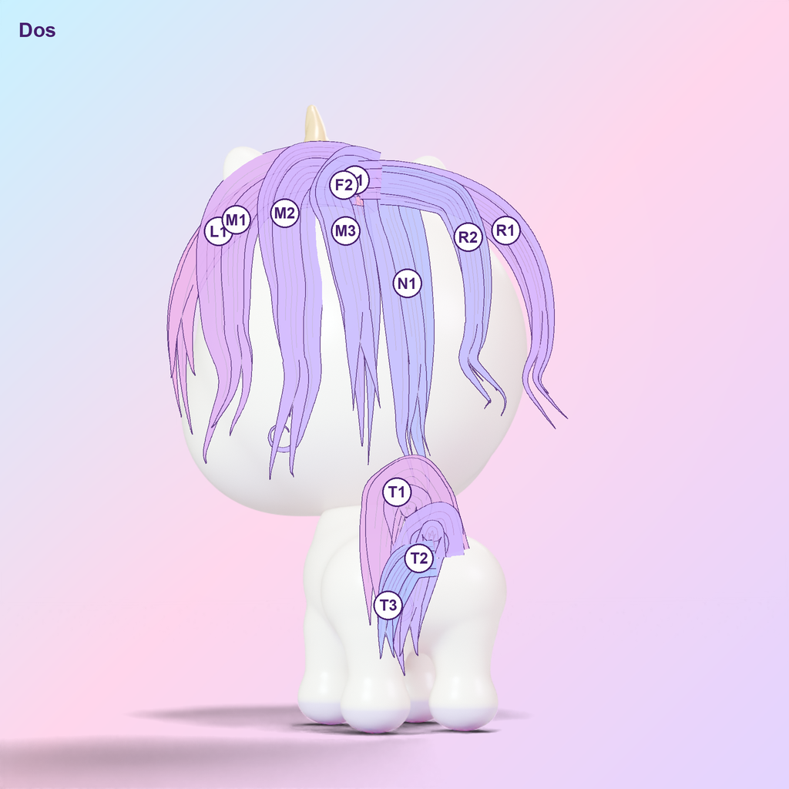
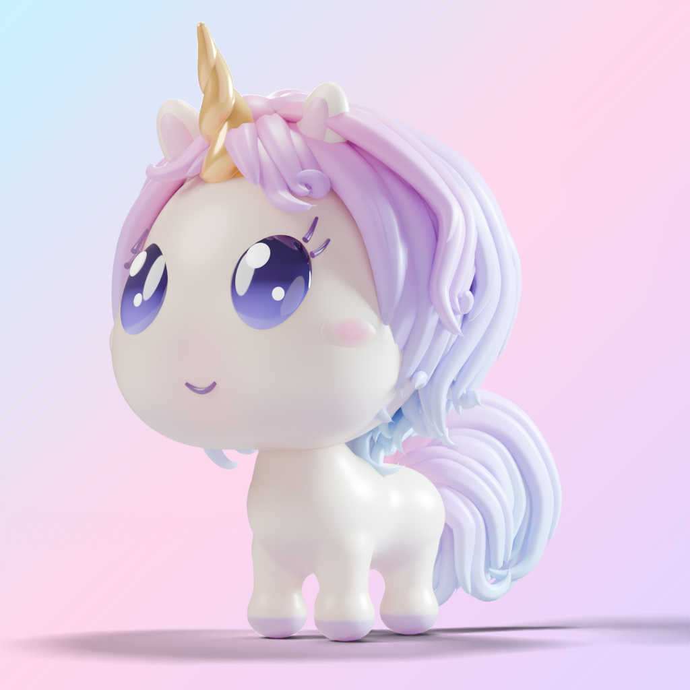

Crinière et queue : planche cible
Une carte de la future coiffure dessinée sur la licorne sans
crinière, pas un rendu. Elle fixe la silhouette, les mèches et leur
ordre avant toute ligne de code. Les couleurs et les traits sont
indicatifs ; ce qui compte : formes, tailles, directions, emplacements.
Audit qui l'a motivée : MANE_AUDIT.md.
Les règles de cette cible
- Une crinière de licorne, pas une chevelure (ta remarque : « on dirait un casque de cheveux ! ») : elle pousse sur la crête, la ligne du milieu, de l'épi derrière la corne jusqu'à la nuque. L'avant des côtés de la tête reste nu, sauf ta mèche derrière l'oreille (L1). La masse (M, N) tombe vers l'arrière et le long du cou.
- Les mèches suivent la forme du crâne (ta remarque : « pourquoi tu ne suis pas la forme du crâne ? ») : elles ne sont plus dessinées à la main vue par vue. Elles sont posées en 3D sur la surface réelle de la tête, puis projetées par la caméra de chaque vue, et cachées là où la tête les masque. Les 4 vues montrent donc la même crinière. Limite connue : de face, deux bords de mèches sont coupés net là où elles passent derrière la tête (masque 2D).
- Une seule origine, la crête derrière la corne : toutes les mèches en partent ; le toupet (F1, F2) suit le front.
- Finesse, à la manière des références ci-dessous : chaque mèche lisible (L1, L2…) est un faisceau de 3 à 6 mèches fines de largeurs différentes qui se chevauchent, avec de fins sillons à l'intérieur ; les pointes s'effilent longuement et une sur trois se fourche en deux. Écart entre mèches fines : 11 à 20 px pour une tête d'environ 495 px de large en 3/4 (1/25 à 1/45 de la tête).
- Mais une hiérarchie : faisceaux de tailles différentes (gros : M1, M2, F1, T1 ; moyens : M3, L1, N ; petits : L2, F2, R, T3) et seulement 2 brins isolés (« s ») placés exprès. Des mèches fines toutes égales donnent des spaghettis (A4 à A7) : essayé sur cette carte, même résultat.
- Peu de boucles, portées par la mèche la plus large de son faisceau : bout du toupet F1, bout de la mèche extérieure de la masse, bout de la queue T1.
- Asymétrie voulue : le toupet part vers l'œil droit ; la masse tombe surtout du côté gauche du perso et derrière ; à droite, juste une petite touffe derrière l'oreille (R).
- Gestes différents : L1 rentre vers la joue, la masse s'écarte de la tête puis retombe, la mèche extérieure s'enroule ; longueurs différentes, rien ne descend plus bas que l'épaule.
- Queue refaite avec les mêmes règles : 3 mèches de tailles différentes, une grande arche, une seule boucle.
Références de finesse
Trouvées sur Sketchfab (le wiki y renvoie pour les modèles 3D). Liens seulement : leur licence ne permet pas de les copier ici. La finesse de la cible vient surtout des trois premières.
- Hair 45, Hair 37, Hair 40 (rumpelshtiltshin) : mèches étroites en couches, sillons fins, pointes effilées et fourchues, quelques brins isolés.
- Lowpoly Stylized Unicorn (hugechimera) : crinière de licorne en nombreuses petites mèches pointues.
- Cute little cartoon unicorn (Meshy, CC0) : licorne chibi au dégradé rose → violet → bleu, grande mèche sur le front, crinière d'un côté. Référence de forme seulement : en « mode solide » sa crinière est une masse lisse, la finesse est peinte dans la texture (9 930 faces).
- Pony luna (Whalenut) : contre-exemple, une grande nappe lisse sans finesse.
Les 4 vues








Avant (A7) / cible, en 3/4

audit/A7_mane_audit_board.png)
Gardé de tes votes (pas remis en jeu)
Licorne chibi, la nôtre. Mèches plates et effilées, pas des tubes (« frites de piscine », A2). Pas une seule grosse mèche par côté (« dreadlocks », A3). Pas de bande entre crâne et crinière de face (A5). Pas d'espace entre tête et crinière (A6). La mèche sur le côté du crâne, de derrière l'oreille jusqu'à la joue, que tu as dessinée : c'est L1. Palette rose → lilas → ciel.
Ton avis
Pour chaque élément : OK, ou ce qu'il faut changer. Tu peux aussi dessiner sur une des images comme pour A6 : c'est ce qui a le mieux marché.
| Élément | OK ? | À changer |
|---|
Texte à me copier